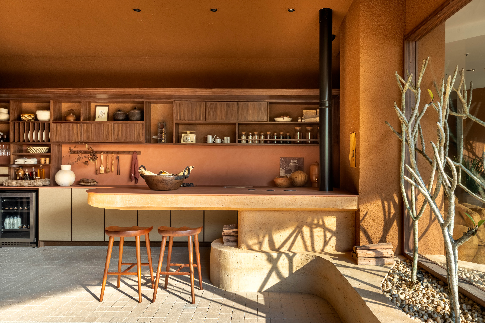
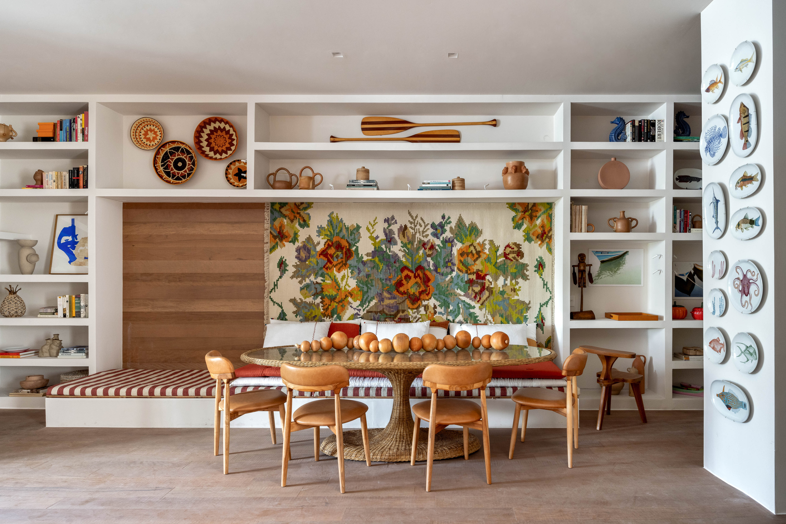

RIO DE JANEIRO
A exposição de design de interiores que aconteceu no Rio de Janeiro no último ano apresentou uma rica trajetória de mostras anteriores, reunindo o talento de arquitetos e designers renomados, além de revelações emergentes no cenário nacional e internacional. Este evento é conhecido por celebrar a diversidade estética e as inovações tecnológicas aplicadas ao design de interiores, criando um espaço onde criatividade, funcionalidade e sustentabilidade se encontram.
Horto Girassol - Varanda Raizes do Cerrado. Com lajotas de barro, biribas, juta e muita vegetação, os paisagistas Maira e Kaio Duarte transformaram a Varanda Raízes do Cerrado em um pedacinho do cerrado brasileiro. É do bioma resiliente e com alta capacidade de adaptação que tão bem representa o Brasil profundo, que vem a inspiração — e a vegetação — do ambiente, feito em parceria com a arquiteta Natalia Lemos. A presença do barro ajuda a evidenciar ainda mais as plantas usadas aqui que, embora vivam praticamente sozinhas, ganharam um sistema de irrigação automatizado. "É um projeto prático, simples, que demanda baixa manutenção e pouca rega."
Natália Lemos - Casa Raizes do Cerrado. Natália Lemos buscou nas cores do cerrado mineiro de sua família o tom da Casa Raízes do Cerrado. Com toques rústicos e memórias afetivas, o espaço pega da terra avermelhada e das árvores tortuosas do bioma, a inspiração para a decoração com biribas, lajotas de barro, taipa, cobogós cimentícios. Peças de família, como a tábua de fazer queijo transformada em aparador e a colcha de crochê, misturam-se a móveis contemporâneos e obras de artistas mineiros, criando uma atmosfera aconchegante e cheia de história. "O ambiente fala de um passado que não ficou para trás e nos guia em busca de um futuro mais consciente e conectado."
PKB Arquitetura - Casa Essência. Acessada por um túnel escuro, a Casa Essência, da PKB Arquitetura, provoca. Na chegada, uma foto de Mariana pós- desastre e um pequeno espelho d'água nos lembram da natureza que invade: com água, lama, terra, poluição. A partir daí, o espaço mostra que a relação homem-natureza pode ser harmônica. Ladeado por uma pequena floresta tropical, o living traz a força da criação humana com peças artesanais e móveis de design. Ao fundo, um painel feito artesanalmente com pedaços de madeira entrelaçados abre caminho para o quarto: ambiente de refúgio e abrigo. "Quisemos unir um ambiente acolhedor com uma arquitetura carioca a uma mensagem de alerta para o futuro."
Mauricio Nobrega, Bia Wolff, Maria Estellita, Patricia Vieira - Perto do Mar. Para o loft Perto do Mar, Mauricio Nóbrega Arquitetura criou um projeto atemporal, com ambientes que exalam a leveza e o frescor de uma casa na praia. O revestimento é quase todo de peroba dourada de demolição, tanto no piso como na parede. A exceção são as áreas molhadas da cozinha e banheiro, que ganharam uma mesma cerâmica artesanal em tom pistache. Já a decoração traz uma Vibe hi-lo com tapeçarias de fibras naturais como juta e lã - inclusive penduradas na parede ou usadas no sofá -, além de móveis e objetos garimpados que vão de cestarias a uma poltrona anos 1950 de Joaquim Tenreiro. A seleção de arte é criteriosa e traz um interessante mix. "Essa mistura foi fundamental para trazer sofisticação e personalidade ao loft."
